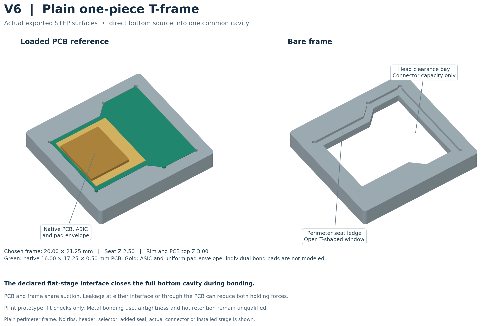

Fit-check prototype
Check how the board seats in the frame and whether the vacuum seal holds across the seating surface.
Weekend update · 3–4 October 2026
V6 simplifies the suction fixture into a one-piece frame. Suction comes directly from below, with the extra ribs removed.

Loading current 3D preview…
Drag to rotate · scroll to zoom · right-drag to pan
V6 · one-piece frame · bottom suction · extra ribs removed. Board seating, vacuum seal and stability still need prototype checks.
Bonding fixture
I simplified the suction fixture into a one-piece frame with suction coming directly from below and removed the extra ribs. The CAD and STL/3MF files are ready for a fit-check prototype. The next step is to check the board seating, vacuum seal, and stability before using it for bonding.
Check how the board seats in the frame and whether the vacuum seal holds across the seating surface.
Verify stability under suction and during handling. Prototype fit is the next step before bonding use.
Project context
The earlier carrier and assembly views provide project context. V6 is the separate current bonding-fixture revision.